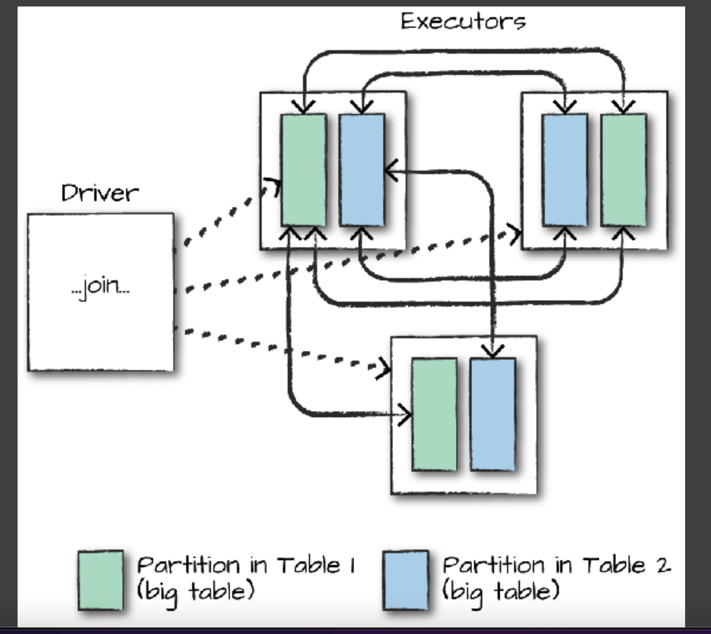
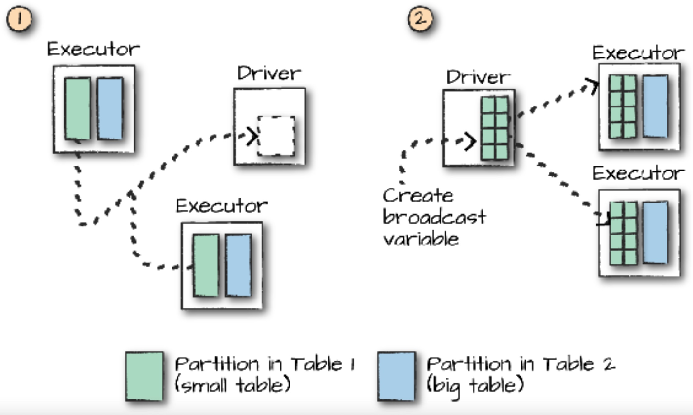

Spark SQL
Technologies Big Data Master MIDS/MFA/LOGOIS
2025-01-17
Spark SQL Bird Eye View
PySpark overview
Overview
Spark SQLis a library included inSparksince version 1.3Spark Dataframeswas introduced with versionIt provides an easier interface to process tabular data
Instead of
RDDs, we deal withDataFramesSince
Spark1.6, there is also the concept ofDatasets, but only forScalaandJava
SparkContext and SparkSession
Before
Spark 2, there was onlySparkContextandSQLContextAll core functionality was accessed with
SparkContextAll
SQLfunctionality needed theSQLContext, which can be created from anSparkContextWith
Spark 2came theSparkSessionclassSparkSessionis the .stress[global entry-point] for everythingSpark-related
SparkContext and SparkSession
Before Spark 2
>>> from pyspark import SparkConf, SparkContext
>>> from pyspark.sql import SQLContext
>>> conf = SparkConf().setAppName(appName).setMaster(master)
>>> sc = SparkContext(conf = conf)
>>> sql_context = new SQLContext(sc)Since Spark 2
DataFrame
DataFrame
The main entity of
Spark SQLis theDataFrameA DataFrame is actually an
RDDofRows with a schemaA schema gives the names of the columns and their types
Rowis a class representing a row of theDataFrame.It can be used almost as a
pythonlist, with its size equal to the number of columns in the schema.
DataFrame
'John'DataFrame[name: string, age: bigint]+-----+---+
| name|age|
+-----+---+
| John| 21|
|James| 32|
| Jane| 18|
+-----+---+
DataFrame
root
|-- name: string (nullable = true)
|-- age: long (nullable = true)
You can access the underlying RDD object using .rdd
(20) MapPartitionsRDD[10] at javaToPython at NativeMethodAccessorImpl.java:0 []
| MapPartitionsRDD[9] at javaToPython at NativeMethodAccessorImpl.java:0 []
| SQLExecutionRDD[8] at javaToPython at NativeMethodAccessorImpl.java:0 []
| MapPartitionsRDD[7] at javaToPython at NativeMethodAccessorImpl.java:0 []
| MapPartitionsRDD[4] at applySchemaToPythonRDD at NativeMethodAccessorImpl.java:0 []
| MapPartitionsRDD[3] at map at SerDeUtil.scala:69 []
| MapPartitionsRDD[2] at mapPartitions at SerDeUtil.scala:117 []
| PythonRDD[1] at RDD at PythonRDD.scala:53 []
| ParallelCollectionRDD[0] at readRDDFromFile at PythonRDD.scala:289 []20Creating DataFrames
We can use the method
createDataFramefrom the SparkSession instanceCan be used to create a
SparkDataFramefrom:- a
pandas.DataFrameobject - a local python list
- an RDD
- a
Full documentation can be found in the [API docs]
Creating DataFrames
+------+---+------+
| name|age|gender|
+------+---+------+
| John| 21| male|
| Jane| 25|female|
|Albert| 46| male|
+------+---+------+
Creating DataFrames
+------+---+------+
| name|age|gender|
+------+---+------+
| John| 21| male|
| James| 25|female|
|Albert| 46| male|
+------+---+------+
Creating DataFrames
+------+---+------+
| name|age|gender|
+------+---+------+
| John| 21| male|
| James| 25|female|
|Albert| 46| male|
+------+---+------+
Schemas and types
Schema and Types
A
DataFramealways contains a schemaThe schema defines the column names and types
In all previous examples, the schema was inferred
The schema of a
DataFrameis represented by the classtypes.StructType[API doc]When creating a
DataFrame, the schema can be either inferred or defined by the user
StructType([StructField('name', StringType(), True), StructField('age', LongType(), True), StructField('gender', StringType(), True)])Creating a custom Schema
root
|-- name: string (nullable = true)
|-- age: integer (nullable = true)
|-- gender: string (nullable = true)
+----+---+------+
|name|age|gender|
+----+---+------+
|John| 21| male|
+----+---+------+
Types supported by Spark SQL
StringTypeIntegerTypeLongTypeFloatTypeDoubleTypeBooleanTypeDateTypeTimestampType...
The full list of types can be found in [API doc]
Reading data
Reading data from sources
Data is usually read from external sources (move the algorithms, not the data)
Spark SQLprovides connectors to read from many different sources:Text files (
CSV,JSON)Distributed tabular files (
Parquet,ORC)In-memory data sources (
Apache Arrow)General relational Databases (via
JDBC)Third-party connectors to connect to many other databases
And you can create your own connector for
Spark(inScala)
Reading data from sources
- In all cases, the syntax is similar:
Spark supports different file systems to look at the data:
Local files:
file://path/to/fileor justpath/to/fileHDFS(Hadoop Distributed FileSystem):hdfs://path/to/fileAmazon S3:s3://path/to/file
Reading from a CSV file
Reading from a CSV file
Main options
Some important options of the CSV reader are listed here:
| Option | Description |
|---|---|
sep |
The separator character |
header |
If “true”, the first line contains the column names |
inferSchema |
If “true”, the column types will be guessed from the contents |
dateFormat |
A string representing the format of the date columns |
The full list of options can be found in the API Docs
Reading from other file types
## JSON file
df = spark.read.json("/path/to/file.json")
df = spark.read.format("json").load("/path/to/file.json")Reading from external databases
We can use
JDBCdrivers (Java) to read from relational databasesExamples of databases:
Oracle,PostgreSQL,MySQL, etc.The
javadriver file must be uploaded to the cluster before trying to accessThis operation can be very heavy. When available, specific connectors should be used
Specific connectors are often provided by third-party libraries
Reading from external databases
or
df = spark.read.jdbc(
url="jdbc:postgresql:dbserver",
table="schema.tablename"
properties={
"user": "username",
"password": "p4ssw0rd"
}
)Queries in Spark SQL
Spark SQL as a Substitute for HiveQL
-
Hive(HadoopInteractiVE)- Devlopped by dring 2000’s
- Released 2010 as
Apacheproject
HiveQL: SQL-like interface to query data stored in various databases and file systems that integrate with Hadoop.
Performing queries
Spark SQLis designed to be compatible with ANSI SQL queriesSpark SQLallowsSQL-like queries to be evaluated on SparkDataFrames (and on many other tables)Spark
DataFrameshave to be tagged as temporary viewsSpark SQLQueries can be submitted usingspark.sql()
Method sql for class SparkSession provides access to SQLContext
Performing queries
+----+---+------+
|name|age|gender|
+----+---+------+
|John| 21| male|
|Jane| 25|female|
+----+---+------+
Using the API
SQL queries form an expresive feature, it’s not the best way to code a complex logic
- Errors are harder to find in strings
- Queries makes the code less modular
The Spark dataframe API offers a developper-friendly API for implementing
- Relational algebra \(\sigma, \pi, \bowtie, \cup, \cap, \setminus\)
- Partitionning
GROUP BY - Aggregation and Window functions
Compare the Spark Dataframe API with:
dplyr, dtplyr, dbplyr in R Tidyverse
Pandas
Chaining and/or piping enable modular query construction
Basic Single Tables Operations (methods/verbs)
| Operation | Description |
|---|---|
select |
Chooses columns from the table \(\pi\) |
selectExpr |
Chooses columns and expressions from table \(\pi\) |
where |
Filters rows based on a boolean rule \(\sigma\) |
limit |
Limits the number of rows LIMIT ... |
orderBy |
Sorts the DataFrame based on one or more columns ORDER BY ... |
alias |
Changes the name of a column AS ... |
cast |
Changes the type of a column |
withColumn |
Adds a new column |
SELECT
+----+---+
|name|age|
+----+---+
|John| 21|
|Jane| 25|
+----+---+
SELECT (continued)
The argument of select() is *cols where cols can be built from column names (strings), column expressions like df.age + 10, lists
+----+----------+
| nom|(age + 10)|
+----+----------+
|John| 31|
|Jane| 35|
+----+----------+
+----+---+
|name|age|
+----+---+
|John| 21|
|Jane| 25|
+----+---+
selectExpr
WHERE
+----+---+------+
|name|age|gender|
+----+---+------+
|Jane| 25|female|
+----+---+------+
LIMIT
+----+---+------+
|name|age|gender|
+----+---+------+
|John| 21| male|
+----+---+------+
+----+---+------+
|name|age|gender|
+----+---+------+
|John| 21| male|
+----+---+------+
ORDER BY
+----+---+------+
|name|age|gender|
+----+---+------+
|Jane| 25|female|
|John| 21| male|
+----+---+------+
ALIAS (name change)
+----+---+------+
|name|age| sex|
+----+---+------+
|John| 21| male|
|Jane| 25|female|
+----+---+------+
CAST (type change)
+----+-----+
|name|age_f|
+----+-----+
|John| 21.0|
|Jane| 25.0|
+----+-----+
+----+-----+
|name|age_f|
+----+-----+
|John| 21.0|
|Jane| 25.0|
+----+-----+
Adding new columns
+----+---+------+----------+
|name|age|gender|age_months|
+----+---+------+----------+
|John| 21| male| 252|
|Jane| 25|female| 300|
+----+---+------+----------+
+----+---+------+----------+
|name|age|gender|age_months|
+----+---+------+----------+
|John| 21| male| 252|
|Jane| 25|female| 300|
+----+---+------+----------+
Basic operations
The full list of operations that can be applied to a
DataFramecan be found in the [DataFrame doc]The list of operations on columns can be found in the [Column docs]
Column functions
Column functions
Often, we need to make many transformations using one or more functions
Spark SQLhas a package calledfunctionswith many functions available for thatSome of those functions are only for aggregations
Examples:avg,sum, etc. We will cover them laterSome others are for column transformation or operations
Examples:substr,concat, … (string and regex manipulation)datediff, … (timestamp and duration)floor, … (numerics)
The full list is, once again, in the [API docs]
Column functions
To use these functions, we first need to import them:
Note: the “as fn” part is important to avoid confusion with native Python functions such as “sum”
Numeric functions examples
from pyspark.sql import functions as fn
columns = ["brand", "cost"]
df = spark.createDataFrame([
("garnier", 3.49),
("elseve", 2.71)
], columns)
round_cost = fn.round(df.cost, 1)
floor_cost = fn.floor(df.cost)
ceil_cost = fn.ceil(df.cost)
df.withColumn('round', round_cost)\
.withColumn('floor', floor_cost)\
.withColumn('ceil', ceil_cost)\
.show()+-------+----+-----+-----+----+
| brand|cost|round|floor|ceil|
+-------+----+-----+-----+----+
|garnier|3.49| 3.5| 3| 4|
| elseve|2.71| 2.7| 2| 3|
+-------+----+-----+-----+----+
String functions examples
from pyspark.sql import functions as fn
columns = ["first_name", "last_name"]
df = spark.createDataFrame([
("John", "Doe"),
("Mary", "Jane")
],
columns
)
last_name_initial = fn.substring(df.last_name, 0, 1)
name = fn.concat_ws(" ", df.first_name, last_name_initial)
df.withColumn("name", name).show()+----------+---------+------+
|first_name|last_name| name|
+----------+---------+------+
| John| Doe|John D|
| Mary| Jane|Mary J|
+----------+---------+------+
Date functions examples
from datetime import date
from pyspark.sql import functions as fn
df = spark.createDataFrame([
(date(2015, 1, 1), date(2015, 1, 15)),
(date(2015, 2, 21), date(2015, 3, 8)),
], ["start_date", "end_date"]
)
days_between = fn.datediff(df.end_date, df.start_date)
start_month = fn.month(df.start_date)
df.withColumn('days_between', days_between)\
.withColumn('start_month', start_month)\
.show()+----------+----------+------------+-----------+
|start_date| end_date|days_between|start_month|
+----------+----------+------------+-----------+
|2015-01-01|2015-01-15| 14| 1|
|2015-02-21|2015-03-08| 15| 2|
+----------+----------+------------+-----------+
Conditional transformations
In the
functionspackage is a special function calledwhenThis function is used to create a new column which value depends on the value of other columns
otherwiseis used to match “the rest”Combination between conditions can be done using
"&"for “and” and"|"for “or”
Examples
df = spark.createDataFrame([
("John", 21, "male"),
("Jane", 25, "female"),
("Albert", 46, "male"),
("Brad", 49, "super-hero")
], ["name", "age", "gender"])
supervisor = fn.when(df.gender == 'male', 'Mr. Smith')\
.when(df.gender == 'female', 'Miss Jones')\
.otherwise('NA')
df.withColumn("supervisor", supervisor).show()+------+---+----------+----------+
| name|age| gender|supervisor|
+------+---+----------+----------+
| John| 21| male| Mr. Smith|
| Jane| 25| female|Miss Jones|
|Albert| 46| male| Mr. Smith|
| Brad| 49|super-hero| NA|
+------+---+----------+----------+
Functions in Relational Database Management Systems
Compare functions defined in pyspark.sql.functions with functions specified in ANSI SQL and defined in popular RDBMs
Section on Functions and Operators
In RDBMs functions serve many purposes
- querying
- system administration
- triggers
- …
User-defined functions
When you need a transformation that is not available in the
functionspackage, you can create a User Defined Function (UDF)Warning: the performance of this can be very very low
So, it should be used only when you are sure the operation cannot be done with available functions
To create an UDF, use
functions.udf, passing a lambda or a named functionsIt is similar to the
mapoperation of RDDs
Example
from pyspark.sql import functions as fn
from pyspark.sql.types import StringType
df = spark.createDataFrame([(1, 3), (4, 2)], ["first", "second"])
def my_func(col_1, col_2):
if (col_1 > col_2):
return "{} is bigger than {}".format(col_1, col_2)
else:
return "{} is bigger than {}".format(col_2, col_1)
my_udf = fn.udf(my_func, StringType())
df.withColumn("udf", my_udf(df['first'], df['second'])).show()+-----+------+------------------+
|first|second| udf|
+-----+------+------------------+
| 1| 3|3 is bigger than 1|
| 4| 2|4 is bigger than 2|
+-----+------+------------------+
Joins
Performing joins
Spark SQLsupports joins between twoDataFrameAs in
ANSI SQL, a join rule must be definedThe rule can either be a set of join keys (equi-join), or a conditional rule (\(\theta\)-join)
Join with conditional rules (\(\theta\)-joins) in
Sparkcan be very heavySeveral types of joins are available, default is
inner
Syntax for \(\texttt{left_df} \bowtie_{\texttt{cols}} \texttt{right_df}\) is simple:
colscontains a column name or a list of column namesjoin_typeis the type of join
Examples
from datetime import date
products = spark.createDataFrame([
('1', 'mouse', 'microsoft', 39.99),
('2', 'keyboard', 'logitech', 59.99),
], ['prod_id', 'prod_cat', 'prod_brand', 'prod_value'])
purchases = spark.createDataFrame([
(date(2017, 11, 1), 2, '1'),
(date(2017, 11, 2), 1, '1'),
(date(2017, 11, 5), 1, '2'),
], ['date', 'quantity', 'prod_id'])
# The default join type is the "INNER" join
purchases.join(products, 'prod_id').show()+-------+----------+--------+--------+----------+----------+
|prod_id| date|quantity|prod_cat|prod_brand|prod_value|
+-------+----------+--------+--------+----------+----------+
| 1|2017-11-01| 2| mouse| microsoft| 39.99|
| 1|2017-11-02| 1| mouse| microsoft| 39.99|
| 2|2017-11-05| 1|keyboard| logitech| 59.99|
+-------+----------+--------+--------+----------+----------+
Examples
+----------+--------+-------+-------+--------+----------+----------+
| date|quantity|prod_id|prod_id|prod_cat|prod_brand|prod_value|
+----------+--------+-------+-------+--------+----------+----------+
|2017-11-01| 2| 1| 1| mouse| microsoft| 39.99|
|2017-11-02| 1| 1| 1| mouse| microsoft| 39.99|
|2017-11-05| 1| 2| 2|keyboard| logitech| 59.99|
+----------+--------+-------+-------+--------+----------+----------+
Examples
+----------+--------+---------+-------+--------+----------+----------+
| date|quantity|prod_id_x|prod_id|prod_cat|prod_brand|prod_value|
+----------+--------+---------+-------+--------+----------+----------+
|2017-11-01| 2| 1| 1| mouse| microsoft| 39.99|
|2017-11-02| 1| 3| NULL| NULL| NULL| NULL|
+----------+--------+---------+-------+--------+----------+----------+
Performing joins: some remarks
Spark removes the duplicated column in the
DataFrameit outputs after a join operationWhen joining using columns with nulls,
Sparkjust skips those
>>> df1.show() >>> df2.show()
+----+-----+ +----+-----+
| id| name| | id| dept|
+----+-----+ +----+-----+
| 123|name1| |null|sales|
| 456|name3| | 223|Legal|
|null|name2| | 456| IT|
+----+-----+ +----+-----+
>>> df1.join(df2, "id").show
+---+-----+-----+
| id| name| dept|
+---+-----+-----+
|123|name1|sales|
|456|name3| IT|
+---+-----+-----+Join types
| SQL Join Type | In Spark (synonyms) | Description |
|---|---|---|
INNER |
"inner" |
Data from left and right matching both ways (intersection) |
FULL OUTER |
"outer", "full", "fullouter" |
All rows from left and right with extra data if present (union) |
LEFT OUTER |
"leftouter", "left" |
Rows from left with extra data from right if present |
RIGHT OUTER |
"rightouter", "right" |
Rows from right with extra data from left if present |
LEFT SEMI |
"leftsemi" |
Data from left with a match with right |
LEFT ANTI |
"leftanti" |
Data from left with no match with right |
CROSS |
"cross" |
Cartesian product of left and right (never used) |
Join types

Inner join (“inner”)
>>> inner = df_left.join(df_right, "id", "inner")
df_left df_right
+---+-----+ +---+-----+
| id|value| | id|value|
+---+-----+ +---+-----+
| 1| A1| | 3| A3|
| 2| A2| | 4| A4_1|
| 3| A3| | 4| A4|
| 4| A4| | 5| A5|
+---+-----+ | 6| A6|
+---+-----+
inner
+---+-----+-----+
| id|value|value|
+---+-----+-----+
| 3| A3| A3|
| 4| A4| A4|
| 4| A4| A4_1|
+---+-----+-----+Outer join (“outer”, “full” or “fullouter”)
>>> outer = df_left.join(df_right, "id", "outer")
df_left df_right
+---+-----+ +---+-----+
| id|value| | id|value|
+---+-----+ +---+-----+
| 1| A1| | 3| A3|
| 2| A2| | 4| A4_1|
| 3| A3| | 4| A4|
| 4| A4| | 5| A5|
+---+-----+ | 6| A6|
+---+-----+
outer
+---+-----+-----+
| id|value|value|
+---+-----+-----+
| 1| A1| null|
| 2| A2| null|
| 3| A3| A3|
| 4| A4| A4|
| 4| A4| A4_1|
| 5| null| A5|
| 6| null| A6|
+---+-----+-----+Left join (“leftouter” or “left” )
>>> left = df_left.join(df_right, "id", "left")
df_left df_right
+---+-----+ +---+-----+
| id|value| | id|value|
+---+-----+ +---+-----+
| 1| A1| | 3| A3|
| 2| A2| | 4| A4_1|
| 3| A3| | 4| A4|
| 4| A4| | 5| A5|
+---+-----+ | 6| A6|
+---+-----+
left
+---+-----+-----+
| id|value|value|
+---+-----+-----+
| 1| A1| null|
| 2| A2| null|
| 3| A3| A3|
| 4| A4| A4|
| 4| A4| A4_1|
+---+-----+-----+Right (“rightouter” or “right”)
>>> right = df_left.join(df_right, "id", "right")
df_left df_right
+---+-----+ +---+-----+
| id|value| | id|value|
+---+-----+ +---+-----+
| 1| A1| | 3| A3|
| 2| A2| | 4| A4_1|
| 3| A3| | 4| A4|
| 4| A4| | 5| A5|
+---+-----+ | 6| A6|
+---+-----+
right
+---+-----+-----+
| id|value|value|
+---+-----+-----+
| 3| A3| A3|
| 4| A4| A4|
| 4| A4| A4_1|
| 5| null| A5|
| 6| null| A6|
+---+-----+-----+Left semi join (“leftsemi”)
>>> left_semi = df_left.join(df_right, "id", "leftsemi")
df_left df_right
+---+-----+ +---+-----+
| id|value| | id|value|
+---+-----+ +---+-----+
| 1| A1| | 3| A3|
| 2| A2| | 4| A4_1|
| 3| A3| | 4| A4|
| 4| A4| | 5| A5|
+---+-----+ | 6| A6|
+---+-----+
left_semi
+---+-----+
| id|value|
+---+-----+
| 3| A3|
| 4| A4|
+---+-----+Left anti joint (“leftanti”)
>>> left_anti = df_left.join(df_right, "id", "leftanti")
df_left df_right
+---+-----+ +---+-----+
| id|value| | id|value|
+---+-----+ +---+-----+
| 1| A1| | 3| A3|
| 2| A2| | 4| A4_1|
| 3| A3| | 4| A4|
| 4| A4| | 5| A5|
+---+-----+ | 6| A6|
+---+-----+
left_anti
+---+-----+
| id|value|
+---+-----+
| 1| A1|
| 2| A2|
+---+-----+Performing joins
Node-to-node communication strategy
Per node computation strategy
From the Definitive Guide:
Spark approaches cluster communication in two different ways during joins.
It either incurs a shuffle join, which results in an all-to-all communication or a broadcast join.
The core foundation of our simplified view of joins is that in Spark you will have either a big table or a small table.
When you join a big table to another big table, you end up with a shuffle join
When you join a big table to another big table, you end up with a shuffle join
When you join a big table to a small table, you end up with a broadcast join
Aggregations
Performing aggregations
Maybe the most used operations in
SQLandSpark SQLSimilar to
SQL, we use"group by"to perform aggregationsWe usually can call the aggregation function just after
groupBy
Namely, we usegroupBy().agg()Many aggregation functions in
pyspark.sql.functionsSome examples:
Numerical:
fn.avg,fn.sum,fn.min,fn.max, etc.General:
fn.first,fn.last,fn.count,fn.countDistinct, etc.
Examples
from pyspark.sql import functions as fn
products = spark.createDataFrame([
('1', 'mouse', 'microsoft', 39.99),
('2', 'mouse', 'microsoft', 59.99),
('3', 'keyboard', 'microsoft', 59.99),
('4', 'keyboard', 'logitech', 59.99),
('5', 'mouse', 'logitech', 29.99),
], ['prod_id', 'prod_cat', 'prod_brand', 'prod_value'])
products.groupBy('prod_cat').avg('prod_value').show()
# Or
products.groupBy('prod_cat').agg(fn.avg('prod_value')).show()+--------+-----------------+
|prod_cat| avg(prod_value)|
+--------+-----------------+
| mouse|43.32333333333333|
|keyboard| 59.99|
+--------+-----------------+
+--------+-----------------+
|prod_cat| avg(prod_value)|
+--------+-----------------+
| mouse|43.32333333333333|
|keyboard| 59.99|
+--------+-----------------+
Examples
+----------+--------+---------------+
|prod_brand|prod_cat|avg(prod_value)|
+----------+--------+---------------+
| microsoft| mouse| 49.99|
| microsoft|keyboard| 59.99|
| logitech|keyboard| 59.99|
| logitech| mouse| 29.99|
+----------+--------+---------------+
Examples
+----------+-------+---+-----+
|prod_brand|average|sum| min|
+----------+-------+---+-----+
| microsoft| 53.3|160|39.99|
| logitech| 45.0| 90|29.99|
+----------+-------+---+-----+
Examples
+----------+-------+-----+
|prod_brand|average| min|
+----------+-------+-----+
| microsoft| 53.3|39.99|
| logitech| 45.0|29.99|
+----------+-------+-----+
Window functions
Window (analytic) functions
A very, very powerful feature
They allow to solve complex problems
ANSI SQL2003 allows for a
window_clausein aggregate function calls, the addition of which makes those functions into window functionsA good article about this feature is [here]
See also :
https://www.postgresql.org/docs/current/tutorial-window.html
Window functions
It’s similar to aggregations, but the number of rows doesn’t change
Instead, new columns are created, and the aggregated values are duplicated for values of the same “group”
There are
- “traditional” aggregations, such as
min,max,avg,sumand - “special” types, such as
lag,lead,rank
- “traditional” aggregations, such as
Numerical window functions
from pyspark.sql import Window
from pyspark.sql import functions as fn
# First, we create the Window definition
window = Window.partitionBy('prod_brand')
# Then, we can use "over" to aggregate on this window
avg = fn.avg('prod_value').over(window)
# Finally, we can it as a classical column
products.withColumn('avg_brand_value', fn.round(avg, 2)).show()+-------+--------+----------+----------+---------------+
|prod_id|prod_cat|prod_brand|prod_value|avg_brand_value|
+-------+--------+----------+----------+---------------+
| 4|keyboard| logitech| 59.99| 44.99|
| 5| mouse| logitech| 29.99| 44.99|
| 1| mouse| microsoft| 39.99| 53.32|
| 2| mouse| microsoft| 59.99| 53.32|
| 3|keyboard| microsoft| 59.99| 53.32|
+-------+--------+----------+----------+---------------+
Numerical window functions
+-------+--------+----------+----------+---------+
|prod_id|prod_cat|prod_brand|prod_value|avg_value|
+-------+--------+----------+----------+---------+
| 4|keyboard| logitech| 59.99| 59.99|
| 5| mouse| logitech| 29.99| 29.99|
| 3|keyboard| microsoft| 59.99| 59.99|
| 1| mouse| microsoft| 39.99| 49.99|
| 2| mouse| microsoft| 59.99| 49.99|
+-------+--------+----------+----------+---------+
Numerical window functions
from pyspark.sql import Window
from pyspark.sql import functions as fn
# Multiple windows can be defined
window1 = Window.partitionBy('prod_brand')
window2 = Window.partitionBy('prod_cat')
avg_brand = fn.avg('prod_value').over(window1)
avg_cat = fn.avg('prod_value').over(window2)
products \
.withColumn('avg_by_brand', fn.round(avg_brand, 2)) \
.withColumn('avg_by_cat', fn.round(avg_cat, 2)) \
.show()+-------+--------+----------+----------+------------+----------+
|prod_id|prod_cat|prod_brand|prod_value|avg_by_brand|avg_by_cat|
+-------+--------+----------+----------+------------+----------+
| 4|keyboard| logitech| 59.99| 44.99| 59.99|
| 3|keyboard| microsoft| 59.99| 53.32| 59.99|
| 5| mouse| logitech| 29.99| 44.99| 43.32|
| 1| mouse| microsoft| 39.99| 53.32| 43.32|
| 2| mouse| microsoft| 59.99| 53.32| 43.32|
+-------+--------+----------+----------+------------+----------+
Lag and Lead
lagandleadare special functions used over an ordered windowThey are used to take the “previous” and “next” value within the window
Very useful in datasets with a date column for instance
Lag and Lead
purchases = spark.createDataFrame([
(date(2017, 11, 1), 'mouse'),
(date(2017, 11, 2), 'mouse'),
(date(2017, 11, 4), 'keyboard'),
(date(2017, 11, 6), 'keyboard'),
(date(2017, 11, 9), 'keyboard'),
(date(2017, 11, 12), 'mouse'),
(date(2017, 11, 18), 'keyboard')
], ['date', 'prod_cat'])
purchases.show()+----------+--------+
| date|prod_cat|
+----------+--------+
|2017-11-01| mouse|
|2017-11-02| mouse|
|2017-11-04|keyboard|
|2017-11-06|keyboard|
|2017-11-09|keyboard|
|2017-11-12| mouse|
|2017-11-18|keyboard|
+----------+--------+
Lag and Lead
+----------+--------+----------+----------+
| date|prod_cat| prev| next|
+----------+--------+----------+----------+
|2017-11-04|keyboard| NULL|2017-11-06|
|2017-11-06|keyboard|2017-11-04|2017-11-09|
|2017-11-09|keyboard|2017-11-06|2017-11-18|
|2017-11-18|keyboard|2017-11-09| NULL|
|2017-11-01| mouse| NULL|2017-11-02|
|2017-11-02| mouse|2017-11-01|2017-11-12|
|2017-11-12| mouse|2017-11-02| NULL|
+----------+--------+----------+----------+
Rank, DenseRank and RowNumber
Another set of useful “special” functions
Also used on ordered windows
They create a rank, or an order of the items within the window
Rank and RowNumber
+--------+-------+------+
|category| name|points|
+--------+-------+------+
|veterans| John| 3000|
|veterans| Bob| 3200|
|veterans| Mary| 4000|
| young| Jane| 4000|
| young| April| 3100|
| young| Alice| 3700|
| young|Micheal| 4000|
+--------+-------+------+
Rank and RowNumber
window = Window.partitionBy('category')\
.orderBy(contestants.points.desc())
rank = fn.rank().over(window)
dense_rank = fn.dense_rank().over(window)
row_number = fn.row_number().over(window)
contestants\
.withColumn('rank', rank)\
.withColumn('dense_rank', dense_rank)\
.withColumn('row_number', row_number)\
.orderBy('category', fn.col('points').desc())\
.show()+--------+-------+------+----+----------+----------+
|category| name|points|rank|dense_rank|row_number|
+--------+-------+------+----+----------+----------+
|veterans| Mary| 4000| 1| 1| 1|
|veterans| Bob| 3200| 2| 2| 2|
|veterans| John| 3000| 3| 3| 3|
| young| Jane| 4000| 1| 1| 1|
| young|Micheal| 4000| 1| 1| 2|
| young| Alice| 3700| 3| 2| 3|
| young| April| 3100| 4| 3| 4|
+--------+-------+------+----+----------+----------+
Writing dataframes
Writing dataframes
Very similar to reading. Output formats are the same:
csv,json,parquet,orc,jdbc, etc. Note thatwriteis an actionInstead of
df.read.{source}usedf.write.{target}Main option is
modewith possible values:"append": append contents of thisDataFrameto existing data."overwrite": overwrite existing data"error": throw an exception if data already exists"ignore": silently ignore this operation if data already exists.
Example
Under the hood…
Query planning and optimization
A lot happens under the hood when executing an action on a DataFrame. The query goes through the following exectution stages:
- Logical Analysis
- Caching Replacement
- Logical Query Optimization (using rule-based and cost-based optimizations)
- Physical Planning
- Physical Optimization (e.g. Whole-Stage Java Code Generation or Adaptive Query Execution)
- Constructing the RDD of Internal Binary Rows (that represents the structured query in terms of Spark Core’s RDD API)
Query planning and optimization

References
Thank you !
IFEBY030 – Technos Big Data – M1 MIDS/MFA/LOGOS – UParis Cité